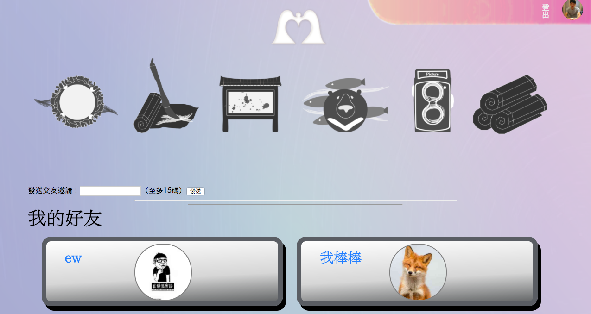
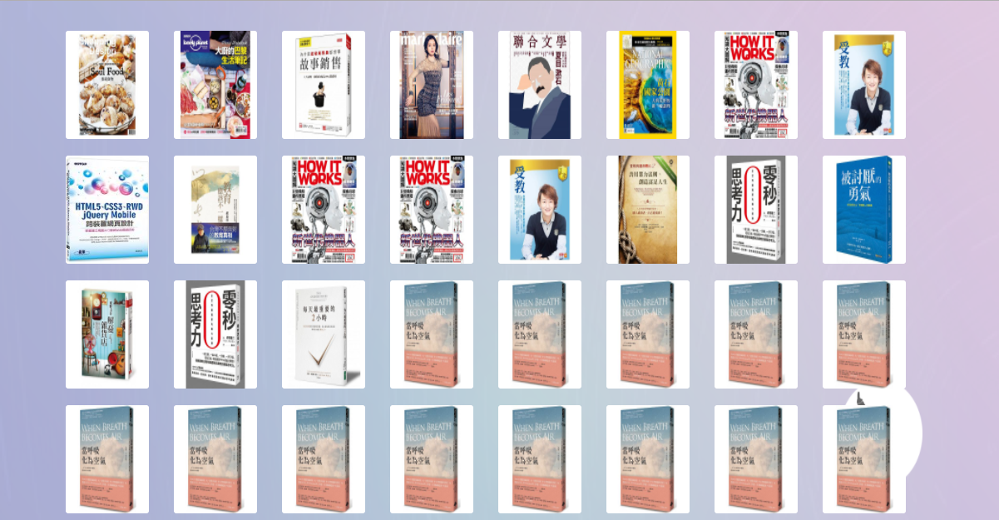
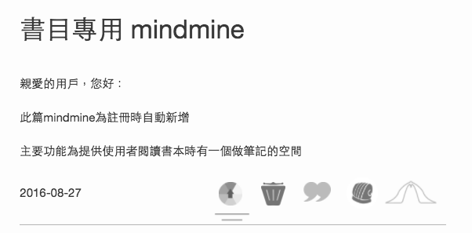

Toggle navigation
Mind Mine
說明
作品介紹
操作影片
補充說明
About
自行開發之專案 - Minemine
說明 (2018/01/15)：
由於計畫改版，現階段將網站關閉。
僅由截圖或是影片介紹內容和技術。
內容簡介：
開發目的為創造『多樣化筆記服務』。
技術使用：
javascript, jQuery & plugins，
後端由朋友幫忙架設，使用 NodeJS 建立 API。
作品介紹
Minemine 是一個我個人設計開發的網頁，
包含網誌、社群、論壇的複合式架構。
其中將著重在兩種功能介紹：MindEditor, MindCard
首頁力
在地理念設計
CSS力
原創華麗動畫
(見下方影片)
頭貼力
自動剪輯頭貼

友達力
基本交友功能

藏書力
個人書庫設計

筆記力
內建書目筆記
MindEditor
專欄型網誌，分做編輯區與參考資料區
強調最人性化的編輯界面 - 隨處可編輯！！
使用Medium-editor，功能包括：
圖片上傳、超連結、以及各種影片檔案的呈現。
特別介紹：書本系統（可以參考下方影片。）
功能簡便，新增、刪除、連結一鍵在手
協助學習之餘，不僅叮嚀自修，更能與朋友分享
此外，還有專欄編輯系統、大綱編輯系統
以最完整的專欄做出鉅細彌遺的呈現為目標
MindCard
真 塗鴉牆
隨身攜帶的便利貼木板
記事、清單、照片、影片，一應俱全
以及超迷你筆記本，還會自動翻頁！！
示範 - 文青小卡
( 參考下方影片。)
進階開發(現暫關閉)
自製calendar：記錄每週活動完成度
訓練統計功能：用於跟監自訂訓練的完成度
1、7、30功能、屬性連帶功能...等等
MindDebate
辯論系統
針對社會議題請提案人編寫主稿
讓民眾享受專業人士收集資料以及思考的方式
進而增長自我思辨力，同時給予反饋
以正反方的方式進行辯論
主張一個人在所有論壇的討論都會被記錄
我們可以快速瞭解一個人思考與發言的慣性
給予有效的幫助，創造良性互動
有效限制網路上不具名的謾罵
讓不同的聲音，在同一個場所
可以共同為了家園的未來，建立最大化的共識
~~~ 作品影片示範 ~~~
1. topic
2. topic_demo
3. 專欄書庫
4. MindCard 文青小卡
Topic View
Topic Practice
Book System
MindCard Demo
Previous
Next
補充說明
目前的新版目標朝向：自我管理工具、自動化日記
已達到讓使用者了解，目標設定和執行力的差距
利用數據的方式，更能夠了解自我能力的極限

{kind=link}
{kind=link}
{kind=link}
{kind=link}
{kind=link}